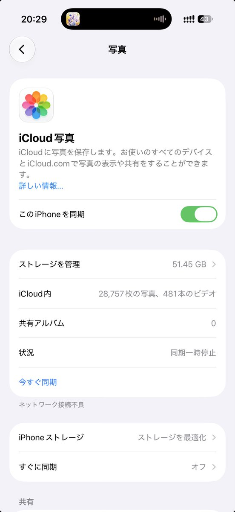

Aoi M
@aoim33
对于喜欢存照片并且不经常清理的人来说，相册简直就是一个巨大的回忆录
平常无聊偶尔回去翻翻自己的相册，某段时间突然存了一个人很多的照片，那是我喜欢上他的时间，后面照片存的越来越少，那是我遗忘他的时间，如果他的照片一直很多那真的很长情了
看漫画看小说有时还会存一些漫画小说的截图，翻相册看到一激动又去把原作品鉴了一遍。翻到退坑游戏的截图回忆起当时玩游戏的热情还有和其他玩家一起玩游戏的快乐
糟心事开心事全部存进相册，这是独属于我的回忆录
